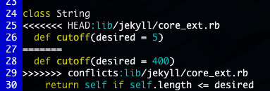

branching and merging
Branching in git is easier than you’d think. It’s fast (40 characters written to a file), simple (one command to create a branch), and efficient (it doesn’t create a whole copy of your current working state). The branches you create don’t have to exist in the remote repository, so you can use them to test out new features or bug fixes without breaking what’s already working. Perhaps Why Git is Better Than X puts it best:
Git will allow you to have multiple local branches that can be entirely independent of each other and the creation, merging and deletion of those lines of development take seconds. […] Git makes this process incredibly easy and it changes the way most developers work when they learn it.
That’s nice and all, but you may still be afraid to use branches just because of the stigmas associated with your previous (or lack thereof) version control system’s way of handling this topic. Worry no longer, we’re going to go over a simple example of branching and merging, and resolving a conflict.
I’m working once again with the jekyll repository. I’m going to check out a new branch, make some changes in a file, and then merge it back into the master branch.
$ git checkout -b fixes
Switched to a new branch "fixes"
$ vim lib/jekyll/core_ext.rb
$ git commit -am "Adding cutoff method to String"
Created commit 670e353: Adding cutoff method to string
1 files changed, 15 insertions(+), 1 deletions(-)
$ git checkout master
Switched to branch "master"
$ git merge fixes
Updating e53ac7a..670e353
Fast forward
lib/jekyll/core_ext.rb | 16 +++++++++++++++-
1 files changed, 15 insertions(+), 1 deletions(-)
And that’s it! If we wanted to delete the branch, doing a git branch -d fixes would remove it. Since it’s so easy to create a branch and work on it separately, integrating this proces into your workflow can be quite beneficial. For instance, Josh Susser has a great post about how he uses branches to work on user stories.
That’s a really simple example of a fast-forward merge though, and is not always the case of what happens. Let’s go through a change I made on the same line of a file in both my master branch and a new branch and see how Git reacts:
$ vim lib/jekyll/core.rb $ git commit -am "Causing a merge on purpose" Created commit 8aba87e: Causing a merge on purpose 1 files changed, 2 insertions(+), 2 deletions(-) $ git checkout -b conflicts $ vim lib/jekyll/core.rb $ git commit -am "Changing cutoff default" Created commit 6041ddd: Changing cutoff default 1 files changed, 1 insertions(+), 1 deletions(-) $ git checkout master Switched to branch "master" $ git merge conflicts Auto-merged lib/jekyll/core_ext.rb CONFLICT (content): Merge conflict in lib/jekyll/core_ext.rb Automatic merge failed; fix conflicts and then commit the result.
Opening up the file will reveal that git shows us the difference in versions for this hunk of text:

If we do a git status it should still show our conflict. Since we want to keep the one from my new version, simply delete the lines that Git plopped in there and the old version. Then just add and commit the file as normal, and your merge is resolved!
$ git status # On branch master # # Changed but not updated: # (use "git add <file>..." to update what will be committed) # # unmerged: lib/jekyll/core_ext.rb # $ vim lib/jekyll/core.rb $ git commit -am "Fixing conflict!" Created commit 9c8e9fd: Fixing conflict!
This creates a special commit that has two parent commits from each of the branches that we merged:
$ git show HEAD
commit 9c8e9fd335381fe6a97708f7b3cd1d5acf670d2d
Merge: 8aba87e... 6041ddd...
Author: Nick Quaranto <nick@quaran.to>
Date: Sun Jan 25 13:22:03 2009 -0500
Fixing conflict!
Future tips will cover using helpers for this process, like git-mergetool and gitk --merge. If you know of good tutorials on these or other ways to do merging, submit a tip! In the meantime check out Scott Chacon’s gitcast on this topic or the Git Community Book’s guide. if you’d like more information on the subject.